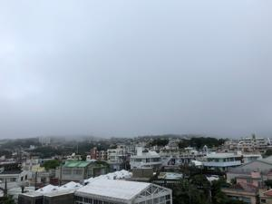
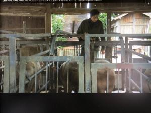
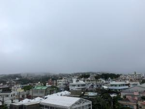
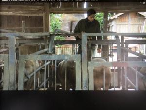

うるがいの話 ある日
最新: 豚小屋【うるがいの話 ある日】とは 一日だけのプログです
『うるがいの話』の最新一日だけのプログで、通信料が少なく経済的だ。カニの画像をクリックすると全ての日付が載る『うるがいの話』サイトを表示します
|
|
【うるがいの話】 うるがい(ｳﾙｶﾞｲ urugai)とは、『もずくがに』の名前でとても大きくなります。 |
|---|---|
|
|
【カミマヤーの話】 猫のことを方言でマヤーといいます。カミマヤー（kamimayaa）とは、神の猫のことです。 |
|
【たながぁの音楽】 たながぁ（ﾀﾅｶﾞｰ tanagaa）とは手長えびのことで、何種類かあり大きいのは車 エビぐらいになります。 |

|
【ぶながぁの話】 ぶながぁ(ﾌﾞﾅｶﾞｰ bunagaa)とは、赤い髪の毛、赤い身体、そして身長は１ｍ２０ｃｍ ぐらい、川の蟹を食べているの目撃された。場所は沖縄県国頭郡大宜味村のと ある村僕の隣近所に住んでいる爺さんから、聞いた話です。 |
|
|
【ギーマの話】 ギーマ(giima)とは、山原の里山に咲くスズランに似た、 花を付けます。実は食べられます、 気が付くと口の周りが紫になっています。 |
2022年05月28日 (土）豚小屋
17:20
 



朝ドラで豚小屋の映像が流れていた。小学生の頃、部落の山の裾に開けた畑を
突き抜けて、小川の近くに豚小屋があった。時々、豚の餌を桶に入れリヤカー
に載せ一人で運び、餌をあげていた（小学生で！）。子豚にお握りを上げた作
文で賞をもらい、副賞にクレヨンを貰った。やがて、親戚の空き屋敷の山の麓
に豚小屋を移し、糞は畑の隅に穴を設けそこへ流した。そこはバナナがよく育
っていた。ある晩、懐中電灯を点け一人で、飼料を餌に豚小屋で餌をあげてい
ると、奥の間切りにいる豚が叫んでいた、懐中電灯をそこに向けると得体のし
れない黒いものが、豚の後ろ脚を持ち上げていた。ビックリして家に速攻、親
に話すが相手にされなかった。最後は部落の端、墓が近くにある５８号線沿い
の畑の片隅を借りて本格的な豚小屋を作った。餌は、給食センターの残飯をピ
ックアップの後ろに載せ、小屋の傍に設けた駐車場に運んだ。豚小屋にいた時
５８号線を走る車の音でドップラー効果に気づき、中学３年生の自由研究で提
出すると理科の先生にとても褒められた。後で知ったのだが私が、ヤンバルを
出ると妹達が、養豚業を手伝ったとのこと。イヤだっただろうな・・・・・。
養豚業は、いつ止めたのだろう、いつ豚小屋を潰したのだろう分からない。
１７時１７分 ビットコインの総資産 ￥１０、６３０↑